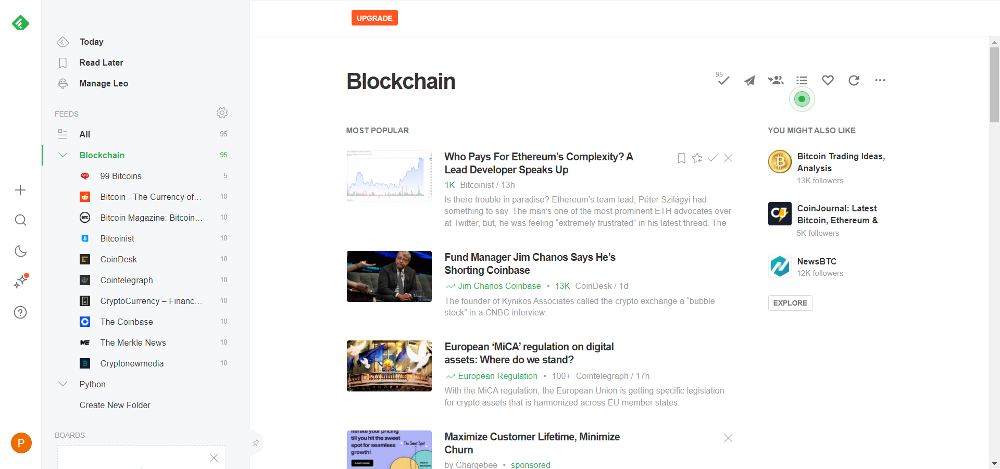
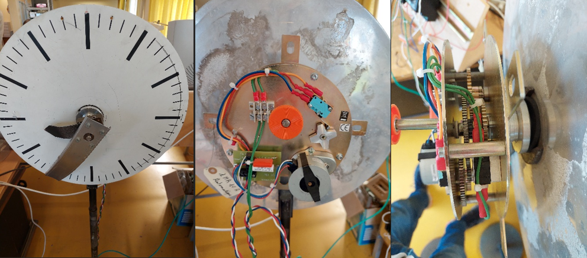
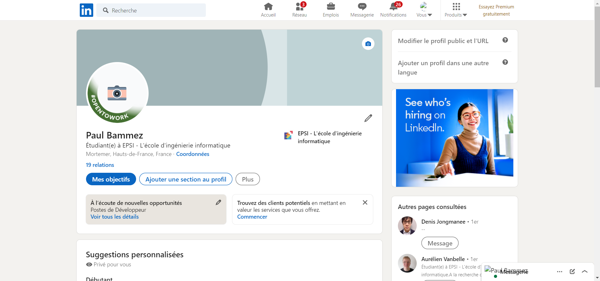

Organiser son développement professionnel
Mettre en place son environnement d’apprentissage personnel
Afin de me tenir informé des dernières actualités et réalisé ma veille technologique,
j'utilise un outils nommé Feedly.
Feedly permet de rechercher les actualités dans
de nombreux domaines, et étant très intéressé par le domaine de la blockchain, je suis
abonnés à quelques comptent postant régulièrement les actualités sur la blockchain .

Mettre en œuvre des outils et stratégies de veille informationnelle
Une de mes missions fût dédiée à l'étude de composants d'une horloge déjà existante
afin de remplacer certains composants, notamment changer les capteurs et le motoréducteur.
Il y a donc eu un travail de veille technologique afin de déterminer quels serait les
composants les plus adaptés.

Gérer son identité professionnelle
Dans le cadre de mes différentes recherches de stage et d'alternance, j'ai créé un
compte Linkedin permettant de me créer un réseau et de publier mon CV
